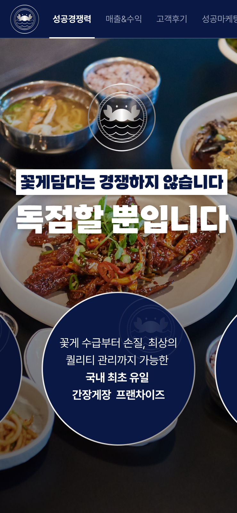
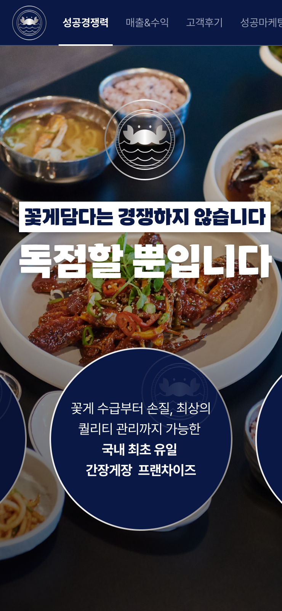

필수사항
- 4~6자리 짝수 메인 텍스트(ex.상호명, 강조내용)
- 강조하고 싶은 키워드 3~4개 (ex. 점심저녁평일주말)
- 반듯하게 원형이 되게끔 정면각으로 찍은 대표 이미지 사진
- 깔끔한 배경사진
선택사항
- 원형 위에 들어가는 12자 이내의 서브 텍스트 1 (ex. 점심 저녁 장사 모두 붙잡은)
- 20자 이내의 서브 텍스트 2 (ex. ~는 실패가 없습니다)
- 로고 (상단 좌측에 들어가게 됩니다)


 
